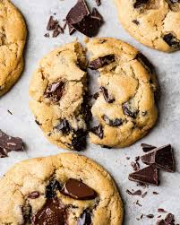

Home
Chocolate Chip Cookies

Description
Chocolate chip cookies are a classic, sweet baked treat made from a buttery dough mixed with sugar, eggs, vanilla, and flour, studded with semi-sweet chocolate chips.
They have a soft and chewy center with slightly crisp edges, offering a warm, rich flavor from the chocolate balanced by the caramel-like sweetness of brown sugar.
Depending on the recipe, they can be thin and crispy or thick and gooey, and are often enjoyed fresh from the oven with a glass of milk.
Ingredients
- Butter
- Granualted sugar
- Brown sugar
- Eggs
- Vanilla extract
- Flour
- Baking soda
- Salt
- Chocolate chips
Steps
- Preheat oven to 375°F (190°C). Line baking sheets with parchment paper.
- Cream butter and sugars
- Add eggs and vanilla
- Mix dry ingredients
- Combine wet and dry
- Fold in chocolate chips
- Scoop dough
- Bake for 8–10 minutes
- Let cookies sit on the baking sheet for 2 minutes before transferring them to a wire rack to cool completely.